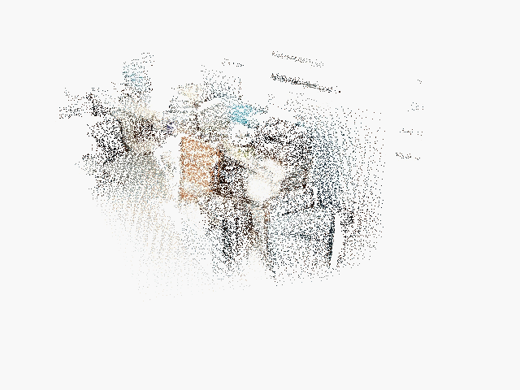

Visualization
namespace: visualization
Visualization is for the convenience of observing the data. It always brings more intuitive understanding and feelings (for the researcher), and also makes the things you do look cooler (for the author).
OnePiece does not have much need for visualization. It is mainly used to display point clouds, triangular meshes (display colors, or phong models). OnePiece also supports to display line segments (used to describe correspondence) and triangular pyramids (used to display camera positions) .
The visualization is implemented in the class Visualizer, which is a partial encapsulation of Pangolin. The main member functions are as follows:
class Visualizer
{
public:
//initialize, name refer to the window name
void Initialize(const std::string &name = "OnePiece");
//insert a point coud into the buffer
void AddPointCloud( const geometry::PointCloud &pcd);
//insert a triangle mesh into the buffer
void AddTriangleMesh(const geometry::TriangleMesh &mesh);
//Display once, mainly used to display dynamically changing objects, such as the reconstruction process
void ShowOnce();
//Continuous display, during which the geometric objects in the buffer cannot be changed
void Show();
//Add a set of Camera (triangular pyramid), the first parameter is the poses, the second parameter is the camera colors
void AddCameraSet(const geometry::SE3List & _camera_poses,
const geometry::Point3List &_camera_colors);
//Add a set of line segments, the first parameter is the two end points of the line, and the second parameter is the color of the line segment
void AddLineSet(const geometry::Point3List & _points,
const std::vector<std::pair<int, int>> &_index, const geometry::Point3List &_line_colors);
};
visualizer does not support the display of multiple kinds of geometric objects(such as display of point cloud and mesh), nor does it support UI. These functions may not be supported in the future.
At present, Visualizer adds the method SetModelViewMatrix to set the view matrix. You only need to pass in the camera pose, and this function will automatically compute the view matrix of the current camera pose in the OpenGL coordinate system. The principle behind is a little confusing, The explanation is as follows.
First of all, we need to know that how the model is rendered: firstly the world coordinate system need to be transformed into the camera coordinate system, and then perform a transmission projection on 3D model to a 2D picture under the camera coordinate system. Finally we got what we see.
View Matrix converts world coordinates of points into camera coordinates, and Projection Matrix projects 3D points onto a 2D plane. Through SetModelViewMatrix, which is to set the view matrix, we can follow camera poses during a reconstruction process as follows:

The following points will introduce in detail of how to obtain the OpenGL view matrix according to the real camera pose:
- A camera pose is denoted as \(T = [R|t]\), then its coordinate system is rotated and translated in the same way. We analyze rotation firstly. The direction vectors of \(x, y, z\) axis of the world coordinate system are \((1, 0, 0)^T, (0, 1, 0)^T, (0, 0, 1)^T\). After rotation, the coordinate system becomes:\(R\cdot[x, y, z] = R\). Therefore, the direction vectors of rotated coordinate system are the column vectors of \(R\). In order to get the coordinates of a certain point in this coordinate system, the column vectors needs to be converted into row vectors. So the transformed coordinate system is \(R^T\). After the rotation, we then translate the coordinate system. The coordinate of the camera position in the rotated coordinate system is: \(R^Tt\). If the coordinate system is translated by \(t\), the coordinate of the original point \(p\) are \(p-t\). Then, we can get that when the camera pose is \([R|t]\), its view matrix is \([R^T|-R^Tt] = T^{-1}\).
- In OpenGL, it is stipulated that the \(z\) axis points to the camera, and the \(y\) axis points upward. In our SLAM system( general camera model), the \(z\) axis is pointed out from the camera, so after obtaining the camera coordinate system, \(z\) axis must be reversed. If the camera's \(f_y\) is positive when modeling, it means that the imaging is upside down (\(z\) is pointed out from the camera, the \(y\) axis is down, and if \(f_y\) is positive, this means y-axis of the world coordinate system is also facing down. \(x\)-axis is facing right, so the \(x\)-axis is normal). So if it is the case, the \(y\) axis also needs to be reversed. Therefore, after obtaining the camera coordinate system according to the camera pose, these two axes need to be processed. The other axis is facing to the right, which can be obtained by cross product (right-hand coordinate system). So we get the direction vectors \(R_g\) of the transformed coordinate system on OpeGL.
- Now we are in the last step. The coordinate system also needs to be translated. Multiply the matrix of the direction vectors( row vectors) by the observation position \(t\) and then take the negative value as we discussed before: \(t_g = -R_g t\). Combine \(R_g\) and \(t_g\) to get final view matrix \([R_g|t_g]\).